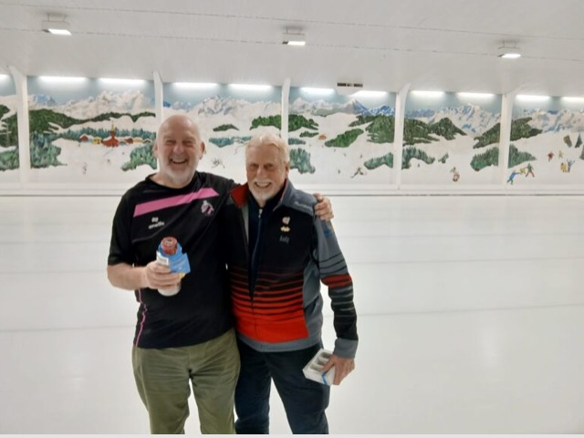
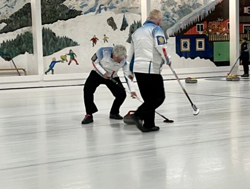
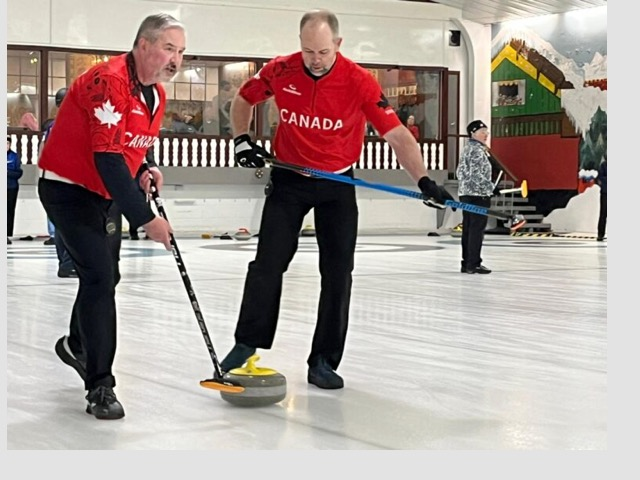
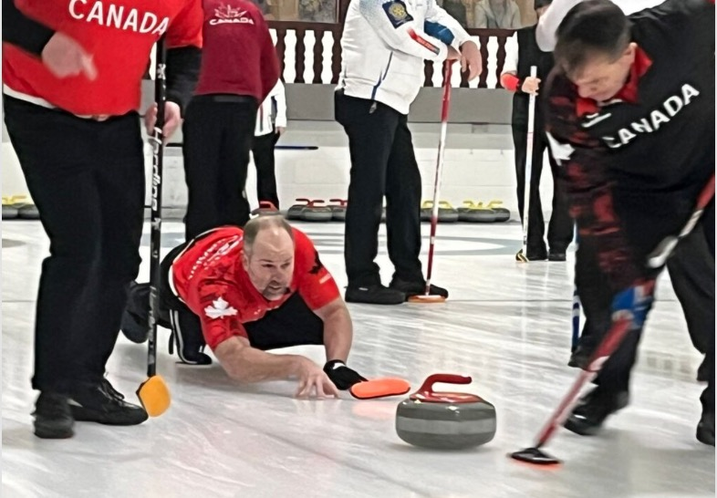
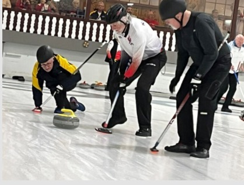
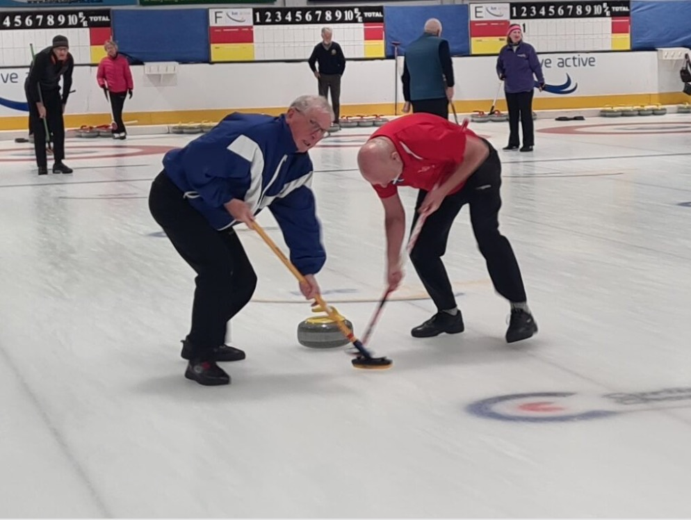
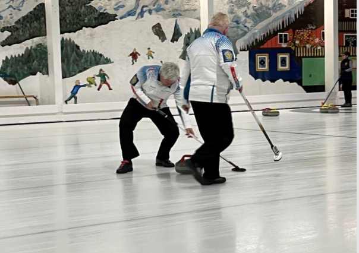
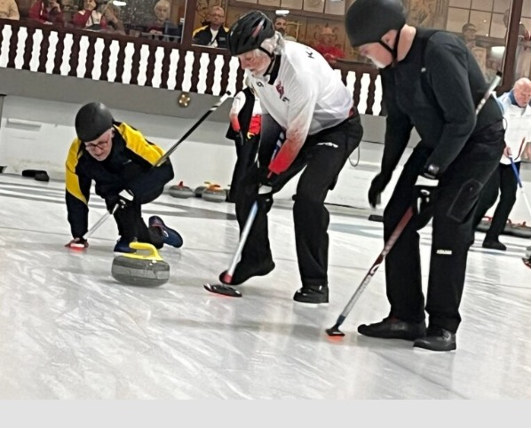

Skip David Hope's review of the Rotary Worlds Curling
Well, what I can say about the Rotary Worlds at Stranraer. Our foreign competitors were overwhelmed by the North West Castle and the fact the ice rink and hotel were all on the same site.
Having set off for Stranraer on Thursday 2nd April, all competitors were making their way to Stranraer for what was going to be a Rotary World Curling Championships to remember. Competitors and non-curling competitors received goody bags which contained on ice and off ice activities for the next 9 days.

David McIntyre chatted at evening Short Curling.
All competitors took to the ice on Friday 3rd April where the Championship and Friendship rinks took to the ice, with an 8am start. For the rink from Ayr this started with a game against our co-host Stranraer. This was going to be nervy game and each rink would need to get off to a good start. The rink of lead David McIntyre, 2nd Bob Cherry, 3rd Euan Lawrence and Skip David Hope managed to secure a win against Stranraer, which would set us up for the week ahead.
Our Friday afternoon game was against the North West Territories in Canada. The players that made up the rink were thousands of miles apart and only played with each other 3 times prior to coming to Stranraer. A set of ear defenders were required for this game as the opposition skip had a very distinctive shout which rang around the ice hall. This was a tough game and unfortunately, we came in second.
Saturday saw the rink play our English friends. This rink although skipped by an English Rotarian, the rink was made up of 3 ladies from Canada. The better halves of these ladies were playing in other rinks in the Championship. This was a one-sided game and we secured our second win. We only played one game on this day.
Sunday was to be another one-day game for the Ayr rink. This was an early start with an 8am start. The opposition was a fellow Scottish rink called Cafe Latte from Aberdeen. This rink had encountered an issue a few days before the event when the lead had an accident at Aberdeen ice rink, where she had broken her ankle. This resulted in Cafe Latte quickly trying to find 2 replacement curlers due to the husband being unable to travel due to caring for his wife. Again, Ayr managed to secure a win against this make shift rink.
We met a Canadian (Bob Normandeau) curler who was standing in for this rink. We were going to meet Bob a further 3 times over the course of the week in other rinks. I have to say that Bob certainly got his monies worth from curling.
A later start on Monday morning was much appreciated as our Sunday evening had been home hospitality. All curlers and partners were home hosted and everyone had a super time at their hosts. Our first game on Monday was against Grimsby and London, another win was secured.
Our afternoon game was against The Vee-Gees. The skip from the Vee-Gees rink treated us every day to a very a whacky shirt! When I went for breakfast, I did wonder what the shirt of the day would be! Again, a win was secured against this Canadian rink.
Tuesday was a single game day but we would play our single game in the afternoon. The skip of team Svenningsen gave you a quick shot before we took to the ice. This rink worked for skip Tammy as the Ayr rink didn't quite get into the swing of things and fell to a defeat.
Wednesday saw us have an 8am start against Rink Duncan, another close game but finished with a win. In the afternoon we played team Perthshire, before going on the ice we knew this was going to be a hard game. The combined age of the rink of Perthshire was approaching 160! With their years of experience and a wee bit of luck it was a loss to team Ayr, we didn't think the score reflect the game though.
Thursday was the last day of the round robin games. Team Ayr was still in the hunt to qualify for the semi-finals but required to play well and as Alex Thomson said before we left to come to Stranraer was "Hope!" Alex had visited Stranraer on Monday for the Rotary meeting and I said to Alex that I was singing "keep the faith" as we played our round robin games. Our first game on Thursday morning was against Durham/Chapel Hill. As the ends progressed it felt like a battle. Durham/Chapel Hill was made of Father, Mother and Son who skipped and a fourth player who wasn't related to the family. Every end felt like a battle but we were able to record a win at the end of the day.
This set us up nicely for our final game where we were playing Swan City/Stony Plain and would meet Bob for the final time. Team Ayr believed that a win or to keep the opposition to the minimum number of ends, would be enough to qualify for the semi-finals. Team Ayr had a good number of ends so a loss would still allow us to qualify for the semi-finals, so the rink thought. After a close game we ran out in second place and thought that we were now through to the semi-finals on Friday morning. An administrative error had been found with an earlier score card and we were informed that actually Team Ayr had failed to qualify by 3 ends. A great pity to a wonderful week of curling in Stranraer.
The eventual winners of the Friendship were Swan City/Stony Plain, so didn't feel so bad. Second was Northwest Territories, Third Stranraer; skipped by David Hardie, third Jack Blackwood, second Hugh Parker and Lead John Munro. Forth was Perthshire, lead stones and in the head Bill Duncan, skip stones Jim McConnell, third Willie Nicol and second George Delgaty.
Our thanks go to the committee for the Rotary Worlds at Stranraer where they put on an amazing event which was very well received by all those who attended.


An event which will live long in the hearts of those who attended.




